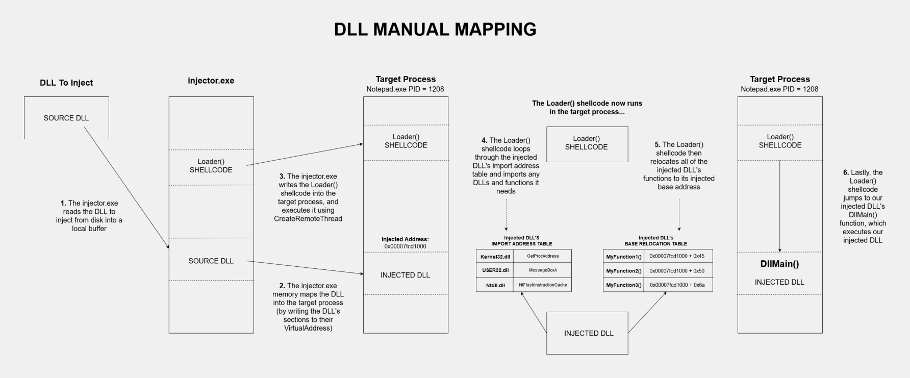
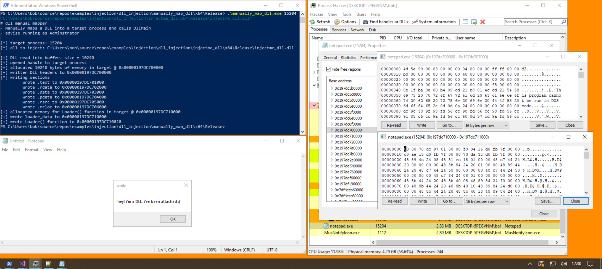

# Manually Map DLL - Complete version with imports
•
https://github.com/Zer0Mem0ry/ManualMap/blob/master/ManualInjector/ManualInjector.cpp•
https://github.com/hrt/ThreadJect-x64/blob/master/ThreadJect/main.cppThis is a more complete version of a DLL manual mapper.
It:
• loads the DLL into a local buffer
• allocates memory in the target process for the DLL
• memory maps the DLL into the target
• allocates memory in the target process for a
Loader() function
• writes the
Loader() function and the data it needs into the target
• starts execution at the
Loader() function in the target using
CreateRemoteThreadThe Loader() function then:
• fixes the DLL's imports (and imports extra modules our DLL needs)
• performs base relocations
• and jumps to our injected DLL's
DllMain function (at which point our injected DLL executes)
## Demo
Here's the DLL I'm injecting:
#include <Windows.h>
BOOL WINAPI DllMain(HINSTANCE hinstDLL, DWORD fdwReason, LPVOID lpReserved)
{
switch (fdwReason)
{
case DLL_PROCESS_ATTACH:
MessageBoxA(NULL, "hey! i'm a DLL. i've been attached :)", "smile", MB_OK);
break;
case DLL_THREAD_ATTACH:
break;
case DLL_THREAD_DETACH:
break;
case DLL_PROCESS_DETACH:
break;
}
return TRUE;
}
I'm injecting into
Notepad - which has a PID of 15204
I've run the injector from an Administrator PowerShell prompt.
We see our injected DLL's window saying hello!
## Code
### Compiling
• Disable optimizations! It breaks the assembly code of the
Loader() function that's injected into the target process
◇ In Visual Studio go to
Project -> Properties -> C/C++ -> Optimization ◇ Set
Optimization to
Disabled and
Whole Program Optimization to
No### Problems
• This 32bit code doesn't work, the target program crashes. I haven't debugged why
### What you can inject
All architectures must match:
• Use 64bit injector with 64bit DLL to inject into 64bit process
/*
A DLL manual mapper.
# About
This mapper writes the DLL to inject, a Loader() function, and data for the Loader() function into the target process.
Execution is then passed to the Loader() function using CreateRemoteThread().
The Loader() function then runs in the target process, fixing our injected DLL's imports and performing base relocations.
When finished, it jumps to our injected DLL's DllMain().
Because the Loader() function needs a few pieces of data to operate, like function addresses and the address of our injected DLL,
we store all this in a struct and write it into the target process so that the Loader() can access it.
# Compiling
- Disable optimisations! It breaks the assembly code of the Loader() function that's injected into the target process
- Project -> Properties -> C/C++ -> Optimization
- Set `Optimization` to `Disabled` and `Whole Program Optimization` to `No`
# What you can inject
All architectures must match:
- Use 64bit injector with 64bit DLL to inject into 64bit process
- Use 32bit injector with 32bit DLL to inject into 32bit process
*/
#include <stdio.h>
#include <Windows.h>
typedef struct BASE_RELOCATION_ENTRY
{
USHORT Offset : 12;
USHORT Type : 4;
} BASE_RELOCATION_ENTRY, * PBASE_RELOCATION_ENTRY;
typedef struct _INJECTED_DLL_INFO
{
void* dll_base;
void* LoadLibraryA_addr;
void* GetProcAddress_addr;
void* NtFlushInstructionCache_addr;
} INJECTED_DLL_INFO, * P_INJECTED_DLL_INFO;
typedef HMODULE(__stdcall* t_LoadLibraryA)(LPCSTR lpLibFileName);
typedef FARPROC(__stdcall* t_GetProcAddress)(HMODULE hModule, LPCSTR lpProcName);
typedef DWORD(NTAPI* t_NtFlushInstructionCache)(IN HANDLE ProcessHandle, IN PVOID BaseAddress, IN ULONG NumberOfBytesToFlush);
typedef BOOL(WINAPI* t_DllMain)(HINSTANCE hinstDLL, DWORD fdwReason, LPVOID lpReserved);
/*
Make sure to call free(file_buffer) after you're done.
*/
LPVOID ReadFileIntoBuffer(char* file_name, OUT DWORD* file_buffer_size)
{
LPVOID file_buffer = NULL;
BOOL b_ret = TRUE;
HANDLE h_file = NULL;
DWORD file_size = 0;
// open target file
h_file = CreateFileA(file_name, GENERIC_READ | GENERIC_WRITE, 0, NULL, OPEN_EXISTING, FILE_ATTRIBUTE_NORMAL, NULL);
if (h_file == INVALID_HANDLE_VALUE)
{
printf("[-] failed to open target file: %d \n", GetLastError());
goto cleanup;
}
// get file size
file_size = GetFileSize(h_file, NULL);
(*file_buffer_size) = file_size;
// create buffer to read file into
file_buffer = malloc(file_size);
// read file into buffer
b_ret = ReadFile(h_file, file_buffer, file_size, NULL, NULL);
if (b_ret == FALSE)
{
printf("[-] failed to read file into buffer: %d \n", GetLastError());
free(file_buffer);
goto cleanup;
}
cleanup:
if (h_file) CloseHandle(h_file);
return file_buffer;
}
/*
Loader function that is to be written into the target process.
It fixes the DLL's imports, performs base relocations, and executes our injected DLL's DllMain().
This function will be called inside of the target process, at which point the DLL will be mapped, so this function uses VirtualAddresses.
NOTE:
- You can't use functions in this code because it won't know the location/addresses of these functions
- Any functions you use have to be used dynamically (this is why we pass the address of any functions we need in the struct `loader_info` paramter)
Parameters:
`loader_info` - a pointer TO the INJECTED_DLL_INFO struct in the target process
*/
__declspec(noinline) void* __stdcall DllLoader(void* ldr_info)
{
P_INJECTED_DLL_INFO ldr_data = (P_INJECTED_DLL_INFO)ldr_info;
t_LoadLibraryA p_LoadLibraryA = (t_LoadLibraryA)ldr_data->LoadLibraryA_addr;
t_GetProcAddress p_GetProcAddress = (t_GetProcAddress)ldr_data->GetProcAddress_addr;
t_NtFlushInstructionCache p_NtFlushInstructionCache = (t_NtFlushInstructionCache)ldr_data->NtFlushInstructionCache_addr;
t_DllMain p_DllMain = NULL;
/*
# Step 1
Import other DLLs required by injected DLL.
*/
PIMAGE_DOS_HEADER dos_header = (PIMAGE_DOS_HEADER)ldr_data->dll_base;
PIMAGE_NT_HEADERS pe_header = (PIMAGE_NT_HEADERS)((size_t)dos_header + dos_header->e_lfanew);
PIMAGE_IMPORT_DESCRIPTOR import_dir = (PIMAGE_IMPORT_DESCRIPTOR)((size_t)ldr_data->dll_base + pe_header->OptionalHeader.DataDirectory[IMAGE_DIRECTORY_ENTRY_IMPORT].VirtualAddress);
PIMAGE_THUNK_DATA lookup_table = NULL;
PIMAGE_THUNK_DATA addr_table = NULL;
PIMAGE_IMPORT_BY_NAME import_name = NULL;
HMODULE h_dll = NULL;
FARPROC import_addr = NULL;
ULONGLONG import_ordinal = 0;
// Loop through DLLs in import directory & load them
while (import_dir->Name != 0)
{
char* dll_name = (char*)((size_t)ldr_data->dll_base + import_dir->Name);
h_dll = p_LoadLibraryA(dll_name);
if (h_dll == NULL)
return 0;
lookup_table = (PIMAGE_THUNK_DATA)((size_t)ldr_data->dll_base + import_dir->OriginalFirstThunk);
addr_table = (PIMAGE_THUNK_DATA)((size_t)ldr_data->dll_base + import_dir->FirstThunk);
// Loop through functions in lookup table in DLL, get the function's address, and write address into the Import Address Table
while (lookup_table->u1.AddressOfData != 0)
{
if (IMAGE_SNAP_BY_ORDINAL(lookup_table->u1.Ordinal))
{
import_ordinal = IMAGE_ORDINAL(lookup_table->u1.Ordinal);
import_addr = p_GetProcAddress(h_dll, (LPCSTR)import_ordinal);
addr_table->u1.Function = (ULONGLONG)import_addr;
}
else
{
import_name = (PIMAGE_IMPORT_BY_NAME)((size_t)ldr_data->dll_base + lookup_table->u1.AddressOfData);
import_addr = p_GetProcAddress(h_dll, import_name->Name);
addr_table->u1.Function = (ULONGLONG)import_addr;
}
lookup_table++;
addr_table++;
}
import_dir++;
}
/*
# Step 2
Perform DLL base relocations.
*/
size_t delta = (size_t)ldr_data->dll_base - (size_t)pe_header->OptionalHeader.ImageBase;
PIMAGE_BASE_RELOCATION reloc_table = (PIMAGE_BASE_RELOCATION)((size_t)ldr_data->dll_base + pe_header->OptionalHeader.DataDirectory[IMAGE_DIRECTORY_ENTRY_BASERELOC].VirtualAddress);
PIMAGE_BASE_RELOCATION reloc_block = reloc_table;
DWORD table_size = pe_header->OptionalHeader.DataDirectory[IMAGE_DIRECTORY_ENTRY_BASERELOC].Size;
DWORD entries_in_block = 0;
DWORD table_position = 0;
PBASE_RELOCATION_ENTRY reloc_entry = NULL;
// Loop through blocks in relocation table
while (table_position < table_size)
{
entries_in_block = (reloc_block->SizeOfBlock - sizeof(IMAGE_BASE_RELOCATION)) / sizeof(WORD);
reloc_entry = (PBASE_RELOCATION_ENTRY)(reloc_block + 1);
for (DWORD i = 0; i < entries_in_block; i++)
{
void* reloc_addr = (void*)((size_t)ldr_data->dll_base + reloc_block->VirtualAddress + reloc_entry->Offset);
if (reloc_entry->Type == IMAGE_REL_BASED_HIGH)
*(WORD*)((size_t)reloc_addr + 0x2) += HIWORD(delta); // add higher 16 bits of delta to higher 16 bits at relocation address
else if (reloc_entry->Type == IMAGE_REL_BASED_LOW)
*(WORD*)reloc_addr += LOWORD(delta); // add lower 16 bits of delta to lower 16 bits at relocation address
else if (reloc_entry->Type == IMAGE_REL_BASED_HIGHLOW)
*(DWORD*)reloc_addr += delta; // add all 32bits of delta to the 32bits at relocation address
else if (reloc_entry->Type == IMAGE_REL_BASED_DIR64)
*(DWORD64*)reloc_addr += delta; // add all 64bits of delta to the 64bits at relocation address
reloc_entry += 1;
}
// Advance to next block
table_position += reloc_block->SizeOfBlock;
reloc_block = (PIMAGE_BASE_RELOCATION)((size_t)reloc_block + reloc_block->SizeOfBlock);
}
/*
# Step 3
Execute manually mapped DLL.
*/
void* dll_entrypoint = (void*)((size_t)ldr_data->dll_base + pe_header->OptionalHeader.AddressOfEntryPoint);
p_DllMain = (t_DllMain)dll_entrypoint;
p_NtFlushInstructionCache((HANDLE)-1, NULL, 0);
p_DllMain((HINSTANCE)ldr_data->dll_base, DLL_PROCESS_ATTACH, NULL);
return dll_entrypoint;
}
/*
Spawns a process, manually maps a DLL into it, writes a Loader() function into the process,
and then creates a new thread at the Loader() function to load the mapped DLL and all its dependencies.
DOWNSIDE:
The spawned target process will remain after the DLL has exited.
*/
BOOL ManuallyMapDLL(void* dll_buffer, int target_pid)
{
BOOL ok = TRUE;
BOOL b_ret = TRUE;
// Create process & map DLL into target
PIMAGE_DOS_HEADER dos_header = (PIMAGE_DOS_HEADER)dll_buffer;
PIMAGE_NT_HEADERS pe_header = (PIMAGE_NT_HEADERS)((size_t)dll_buffer + dos_header->e_lfanew);
PIMAGE_SECTION_HEADER section_header = IMAGE_FIRST_SECTION(pe_header);
LPVOID dll_base = NULL;
HANDLE h_process = NULL;
HANDLE h_thread = NULL;
h_process = OpenProcess(PROCESS_ALL_ACCESS, FALSE, target_pid);
if (h_process == NULL)
{
ok = FALSE;
goto cleanup;
}
printf("[+] opened PID: %d \n", target_pid);
dll_base = VirtualAllocEx(h_process, NULL, pe_header->OptionalHeader.SizeOfImage, MEM_COMMIT | MEM_RESERVE, PAGE_EXECUTE_READWRITE);
if (dll_base == NULL)
{
ok = FALSE;
goto cleanup;
}
printf("[+] allocated memory @ 0x%p \n", dll_base);
b_ret = WriteProcessMemory(h_process, dll_base, dll_buffer, pe_header->OptionalHeader.SizeOfHeaders, NULL);
if (b_ret == FALSE)
{
VirtualFreeEx(h_process, dll_base, pe_header->OptionalHeader.SizeOfImage, MEM_RELEASE);
ok = FALSE;
goto cleanup;
}
printf("[+] wrote PE headers to 0x%p \n", dll_base);
printf("[*] sections \n");
LPVOID section_addr = NULL;
LPVOID write_addr = NULL;
for (DWORD i = 0; i < pe_header->FileHeader.NumberOfSections; i++)
{
section_addr = (LPVOID)((SIZE_T)dll_buffer + section_header->PointerToRawData);
write_addr = (LPVOID)((SIZE_T)dll_base + section_header->VirtualAddress);
b_ret = WriteProcessMemory(h_process, write_addr, section_addr, section_header->SizeOfRawData, 0);
if (b_ret == FALSE)
{
VirtualFreeEx(h_process, dll_base, pe_header->OptionalHeader.SizeOfImage, MEM_RELEASE);
ok = FALSE;
goto cleanup;
}
printf("\t + wrote %s to 0x%p \n", section_header->Name, write_addr);
section_header += 1;
}
// Write DllLoader function and info struct into target process
LPVOID ldr_struct = NULL;
LPVOID ldr_func = NULL;
INJECTED_DLL_INFO ldr_info = { 0 };
ldr_info.dll_base = dll_base;
ldr_info.LoadLibraryA_addr = (t_LoadLibraryA)GetProcAddress(LoadLibraryA("Kernel32.dll"), "LoadLibraryA");
ldr_info.GetProcAddress_addr = (t_GetProcAddress)GetProcAddress(LoadLibraryA("Kernel32.dll"), "GetProcAddress");
ldr_info.NtFlushInstructionCache_addr = (t_NtFlushInstructionCache)GetProcAddress(LoadLibraryA("Ntdll.dll"), "NtFlushInstructionCache");
ldr_struct = VirtualAllocEx(h_process, NULL, 4096, MEM_COMMIT | MEM_RESERVE, PAGE_EXECUTE_READWRITE);
if (ldr_struct == NULL)
{
ok = FALSE;
goto cleanup;
}
printf("[*] allocated space for DllLoader @ 0x%p \n", ldr_struct);
b_ret = WriteProcessMemory(h_process, ldr_struct, &ldr_info, sizeof(ldr_info), NULL);
if (b_ret == FALSE)
{
VirtualFreeEx(h_process, dll_base, pe_header->OptionalHeader.SizeOfImage, MEM_RELEASE);
ok = FALSE;
goto cleanup;
}
printf("\t + wrote ldr_struct to 0x%p \n", ldr_struct);
ldr_func = (LPVOID)((size_t)ldr_struct + sizeof(ldr_info));
b_ret = WriteProcessMemory(h_process, ldr_func, &DllLoader, 4096 - sizeof(ldr_info), NULL);
if (b_ret == FALSE)
{
VirtualFreeEx(h_process, dll_base, pe_header->OptionalHeader.SizeOfImage, MEM_RELEASE);
ok = FALSE;
goto cleanup;
}
printf("\t + wrote ldr_func to 0x%p \n", ldr_func);
// Execute DllLoader function in target proc (which relocate & load our DLL)
h_thread = CreateRemoteThread(h_process, NULL, 0, (LPTHREAD_START_ROUTINE)ldr_func, ldr_struct, 0, NULL);
printf("[*] started remote thread @ 0x%p \n", ldr_func);
cleanup:
if (h_process) CloseHandle(h_process);
if (h_thread) CloseHandle(h_thread);
return ok;
}
int main(int argc, char* argv[])
{
printf("# dll manual mapper \n");
printf("- Manually maps a DLL into a target process and calls DllMain \n");
printf("- advise running as Adminstrator \n");
printf("\n");
if (argc != 3)
{
printf("[-] not enough arguments :/ \n");
printf("usage: manual_mapper.exe [target pid] [dll path] \n");
return EXIT_FAILURE;
}
int target_pid = atoi(argv[1]);
char* dll_path = argv[2];
printf("[*] target process: %d \n", target_pid);
printf("[*] dll to inject: %s \n\n", dll_path);
LPVOID dll_buffer = NULL;
DWORD dll_buffer_size = 0;
dll_buffer = ReadFileIntoBuffer(dll_path, &dll_buffer_size);
if (dll_buffer == NULL)
{
printf("[-] failed to read DLL into buffer: %d \n", GetLastError());
goto cleanup;
}
ManuallyMapDLL(dll_buffer, target_pid);
cleanup:
if (dll_buffer) free(dll_buffer);
return 0;
}